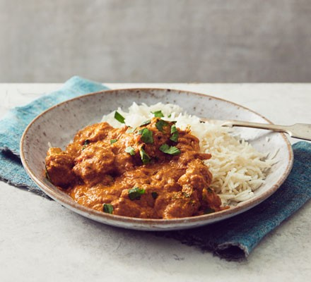

Easy chicken curry

This easy staple chicken curry is a fantastic recipe for family dinners. It's made with just a handful of ingredients and is enriched with creamy yogurt
Preparation Time : 5 Mins
Cooking Time : 45 Mins
Number of Servings : 4 Individuals
Difficulty Level : Easy
Ingredients
- 2 tbsp Sunflower Oil
- 2 Garlic Cloves
- Thumb-sized piece of ginger
- 6 Chicken thighs
- 3 tbsp medium sized paste
- 400g can chopped Tomatoes
- 1 small bunch of coriander
- 50g ground almonds
- Naan breads
Nutrition Facts
Per Serving
- kcal 354
- fat 23g
- saturates 4g
- carbs 10g
- sugars 8g
- fibre 3g
- protein 3g
- salt 0.6g
Instructions
- Step 1
Heat the oil in a flameproof casserole dish or large frying pan over a medium heat.
- Step 2
Add the onion and a generous pinch of salt and fry for 8-10 mins, or until the onion has turned golden brown and sticky.
- Step 3
Add the garlic and ginger, cooking for a further minute.
- Step 4
Chop the chicken into chunky 3cm pieces, add to the pan and fry for 5 mins before stirring through the spice paste and tomatoes, along with 250ml water.
- Step 5
Bring to the boil, lower to a simmer and cook on a gentle heat uncovered for 25-30 mins or until rich and slightly reduced.
- Step 6
Stir though the yogurt, coriander and ground almonds, season and serve with warm naan or fluffy basmati rice.
Tips:How to thicken curry sauce
If you find your sauce is on the runny side, there are several ways to fix this. Here are our top 3 methods:
- Simmering gently on a low temperature will reduce the volume of liquid as well as intensifying the flavour of the curry.
- Add 1 tbsp cornflour to 2-3 tbsp of cold water to form a slurry. Then add this to the curry and simmer until it thickens.
- Add a few tbsp of Greek yogurt, which will give the curry a lovely creamy consistency too.
Love this recipe? Kindly click here to see more recipes